把“看不见的城市风”变成无人机可以调用的现场知识：从建筑地图或相机视图建立风场先验，再决定是否测风、测哪里、走哪条，以及什么时候不飞。
这条线从原来的城市风场规划矩阵中单独拿出来，研究对象从“预测风场 → 单次路线”扩展为“部分可观测风场 → 主动测量 → 安全决策”。
2026-11-16 v0 判定实验：500 题 单机 · 端侧 · 主动测风
| 失败率 | 选中的航线在 CFD 风下途中超限的比例，安全优先 |
| 不飞率 | 判断为不可行并选择等待 / 不飞的比例 |
| regret | 相对于知道真实风时的最优可行航线多耗的能量 |
| 测风成本 | 测点数量、绕路距离、额外能耗和时间 |
下面三张图都来自原风场规划线的可信评测（GeoWind2Plan 五个街区，GPU 修复 + 严格检查），详细口径见总览页 §5。它们是 WindESI 问题定义的直接依据。
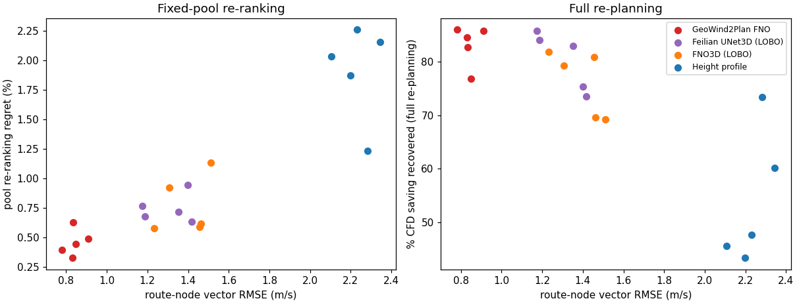
对 WindESI：把场测得更准，不一定让决策更好；智能体要关心的是“这次测量会不会改变选择”。
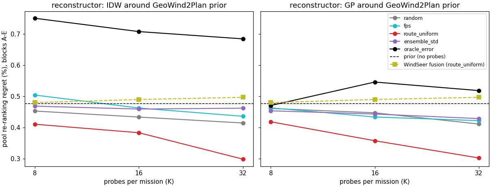
对 WindESI：这是 action blindness 在固定规则上的先例：按“哪里最不确定 / 误差最大”去测，反而选错路线。
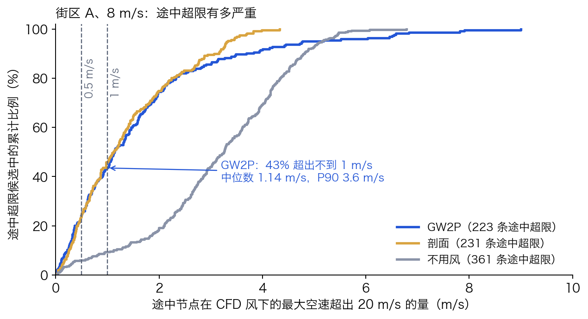
对 WindESI：评测主指标用失败率和不飞率，不能只看能耗或问答准确率。
建筑地图或相机视图 → 几何、遮挡和可见区域。v0 只用俯视建筑高度图，后续再接相机视角。
几何 + 背景风 → 走廊内三维风。网页 WebGPU 已经跑通逐层 2D FNO，作为端侧可行性的代理证据。
判断先测还是直接飞、去哪里测、什么时候重规划、是否等待。不直接输出轨迹。
利用飞控状态估计风，测量带噪声且有移动成本。读数之后更新信念，而不是把测量当成免费真值。
按当前信念生成候选路线，再严格检查净空、空速和推力限制，最终在 CFD 风里评估。
不做前机侦察、后机跟随和多机信息路径；我们聚焦单机端侧决策与主动测风。
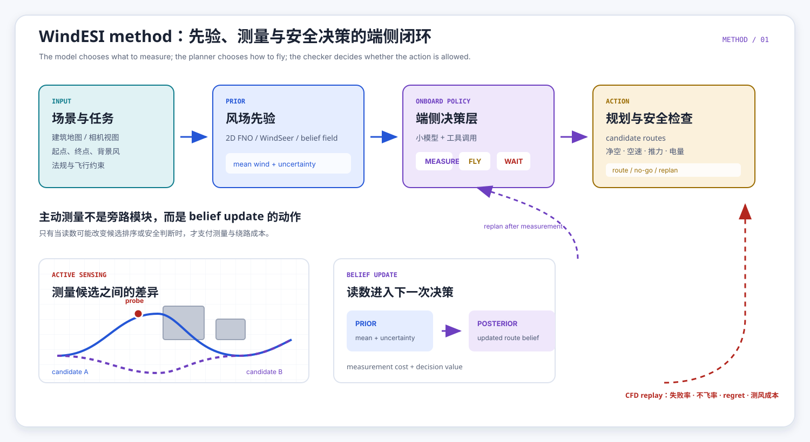
| 证据 | 怎么得到 | 状态 |
|---|---|---|
| ① 模型规模与量化后内存 | 2B / 4B / 9B 在 4-bit 下实测显存或内存占用 | 待测 |
| ② 端侧代理延迟 | 笔记本级设备（Apple M4，统一内存）上用量化模型实测单步决策延迟；明确写成代理，不等同 Jetson | 待测 |
| ③ 风场先验计时 | 浏览器 WebGPU 跑逐层 2D FNO（权重约 431 KiB），一次推理约 1.9 s（Apple M4） | 已有 |
不写“已在无人机上实时运行”。所有飞行与测风在 CFD 里仿真；测风噪声先取文献仿真值 0.4 m/s，再做噪声大小的敏感性分析。
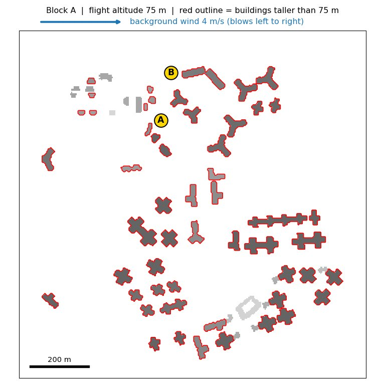
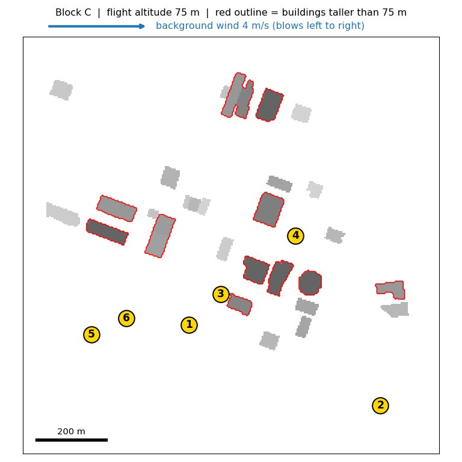
| 方法 | T1 两点比风 | T2 找最静点 | 说明 |
|---|---|---|---|
| 随机 | 0.507 | 0.170 | |
| 几何规则：离建筑越远风越大 | 0.587 | 0.280 | CPU，十几行代码 |
| 几何规则：上风向遮挡越少风越大 | 0.693 | 0.485 | CPU，十几行代码 |
| GW2P 风场先验 | 0.890 | 0.655 | 作者预计算的预测 |
| Qwen3-VL-8B · 只给坐标 | 0.527 [0.47, 0.58] | 0.185 [0.14, 0.25] | 约等于随机 |
| Qwen3-VL-8B · 看图 | 0.417 [0.36, 0.47] | 0.205 [0.16, 0.27] | T1 低于随机 |
| T2 主动条件：先测 2 个点再答 | |||
| 随机测 2 点 | — | 0.300 | |
| 测遮挡最多的 2 点 | — | 0.600 | CPU |
| 测先验最静的 2 点 | — | 0.755 | 先验 + 测量 |
| Qwen3-VL-8B · 主动 | — | 0.415 [0.35, 0.48] | |
| 6 点全测 | — | 0.825 | 噪声 0.4 m/s 下的本题上限 |
| 指标 | Qwen3-VL-8B | 随机测 | 测先验最静的 2 点 |
|---|---|---|---|
| 真正最静的点在 2 个测点里的比例 | 0.395 | 0.333 | 0.830 |
| 拿到读数后，选读数最低的点 | 0.895 | — | — |
200 题；读数对所有方法相同（固定随机种子）。
下一步用 L0（读图）/ L1（直接给出几何事实后的推理）/ L2（选测点）分层诊断，区分“看不懂图”和“不会推理风”。
| 组 | 模型 | 规模 | 发布 | 状态 |
|---|---|---|---|---|
| A 通用小模型 | Qwen3-VL-8B-Instruct | 8B | 2025-10 | 已测（本节） |
| Qwen3.5 2B / 4B / 9B | 2–9B | 2026-02 | 已下载 · 主线，部署目标 4B | |
| Gemma 4 E2B / E4B | 2.3B / 4.5B 有效 | 2026-03 | 已下载 | |
| MiniCPM-V 4.6 / 4.7-1B | 1–1.3B | 2026-04 / 10 | 已下载 | |
| LFM3-VL-2B | 1.9B | 2026-10 | 已下载 | |
| B 具身 / 空间推理 | RoboBrain 2.5-4B | 4B | 2026-02 | 已下载 |
| Spatial-SSRL-Qwen3VL-4B | 4B | 2025-11 | 下载中 | |
| Embodied-R1-3B · HY-Embodied-0.5 · MiMo-Embodied-7B | 3–7B | 2025-06 – 2026-04 | 排队 | |
| Cosmos-Reason2 2B / 8B | 2 / 8B | 2025-12 | HF 需要同意许可（403），暂缺 | |
| InternVL3.5 2B / 8B 作为跨系列对照，待定 | ||||
筛选方案：固定抽 200 题（T1、T2 各 100），每个模型跑看图 / 只给坐标 / 主动三种条件；最好的通用模型和具身模型再跑全量 500 题和分层诊断。
| 层 | 论点 | 需要的证据 |
|---|---|---|
| 评测发现 | 通用和具身小模型在看不见的风场上都不如简单规则：现有具身空间智能还不懂物理场 | 3.2 的模型全部跑完，并用分层诊断说明错在读图、物理直觉还是选点 |
| 方法 | 遮挡规则、GW2P 先验、决策价值选点不是对手，而是小模型的工具；比的是“小模型 + 工具 + 训练”对“任何单一固定算法” | 训练后的 4B：T2 不低于“测先验最静的 2 点”（0.755）；混合任务上明显超过每一条单一规则；留出街区上成立 |
| 任务 | 加入单一规则解决不了的题：混合目标（能耗 + 安全余量 + 日本 5 m/s 规则）、自然语言任务、多步决策（先测还是先飞、测完改道还是等） | 每条 CPU 规则只能写死一种题；小模型的价值是一个模型处理所有题型 |
下面的图不是装饰性画廊，而是按 WindESI 的闭环分工组织：风场先验解决“我对风有什么信念”，主动测量解决“下一次测哪里”，决策与 agent 解决“测量是否值得、什么时候飞”。图片均来自本地 `assets/`，来源和许可记录在媒体清单。
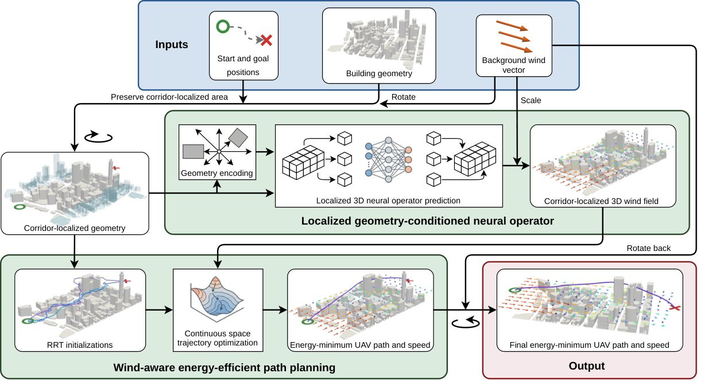
对 WindESI：提供“从几何得到风场先验”的起点。差别是原工作默认先验可以直接拿来规划，WindESI 还要判断先验何时不可信、是否值得主动测量。
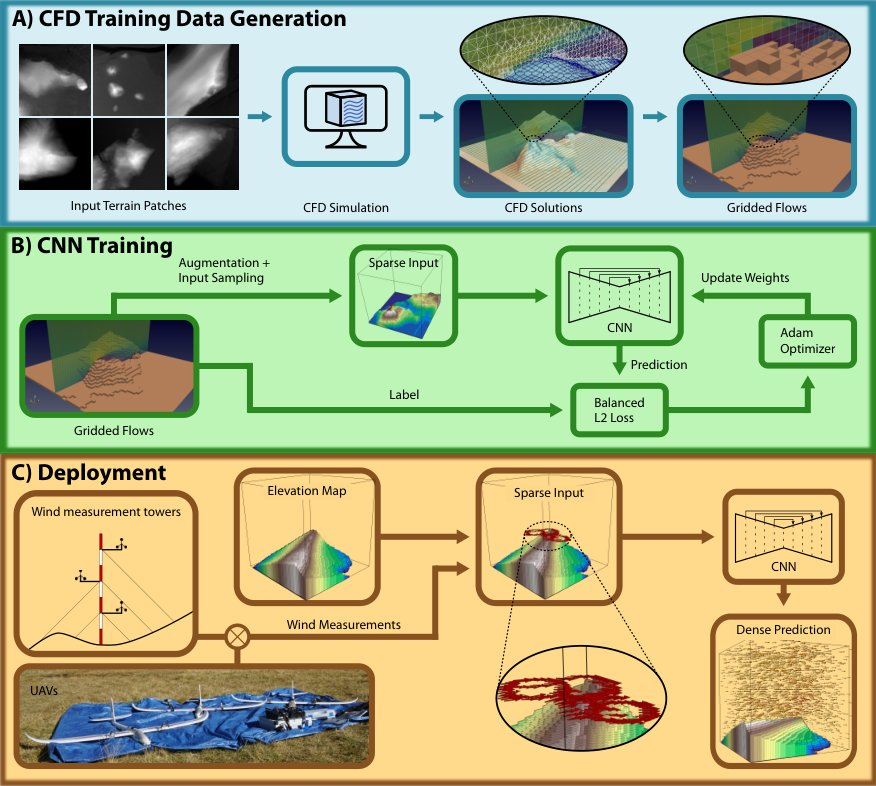
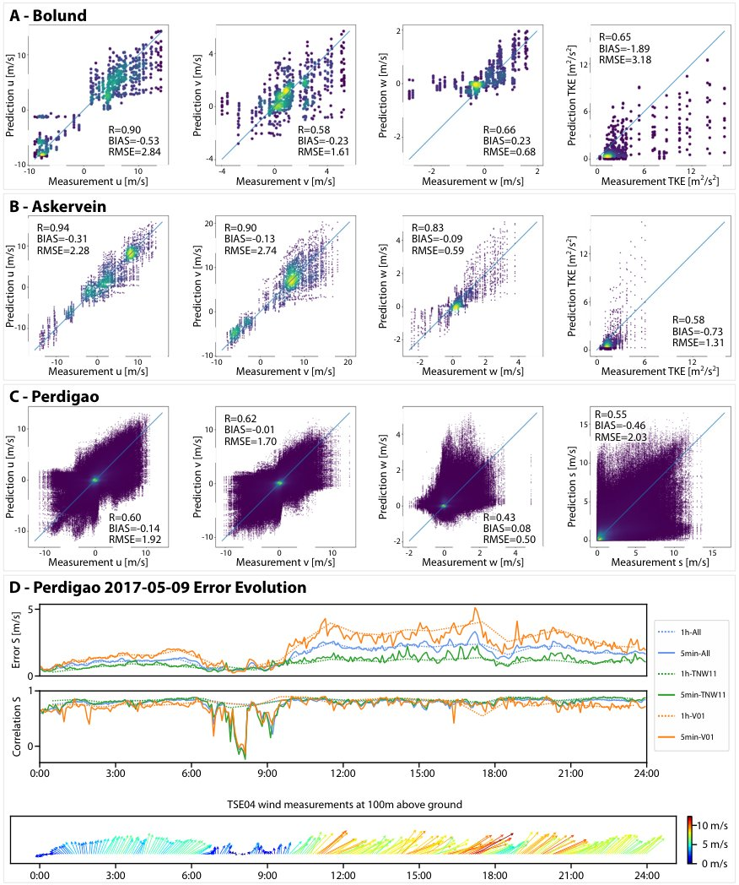
对 WindESI：说明“机载测风 + 小型网络 + 实时预测”可以成为先验工具；限制是自然地形，不是城市建筑。
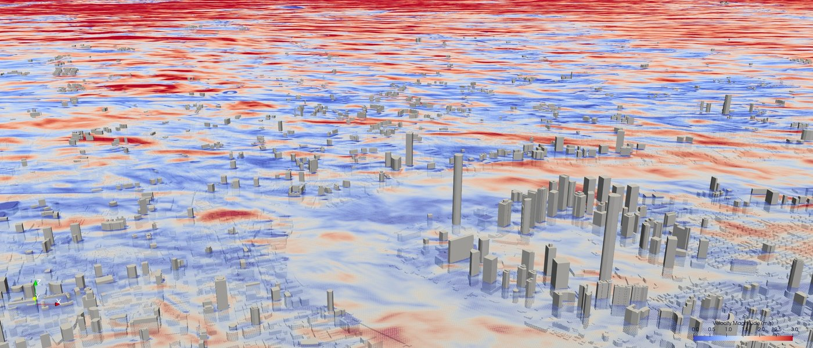
对 WindESI：它把稀疏重建、暴露排序、适航风险评分等任务放在同一个城市基准里，适合补齐 GeoWind2Plan 只有单一来流方向的限制。
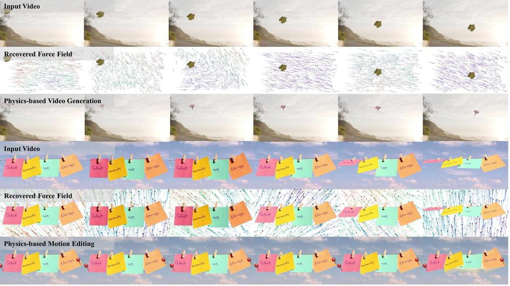
对 WindESI：提供另一条“看见风”的路线：不是直接渲染建筑到风，而是从运动 / 视觉证据反推物理场。未来相机视角和飞行日志可以接到这条线。
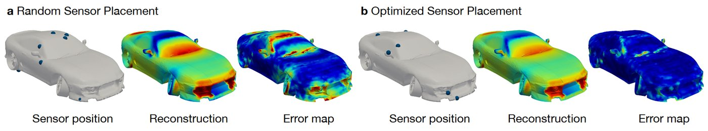
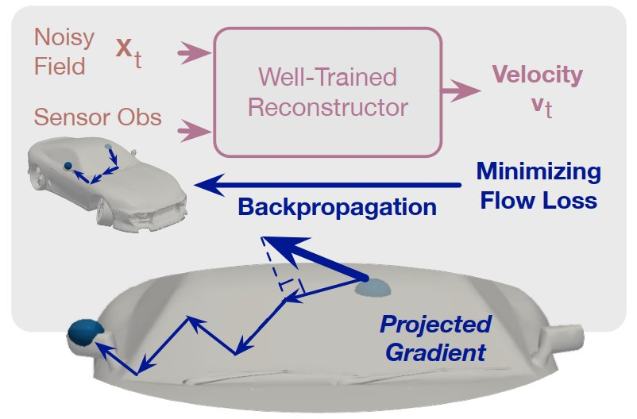
最直接的选点 baseline。它优化物理场重建误差，WindESI 要把目标换成路线排序、失败率和测量成本。
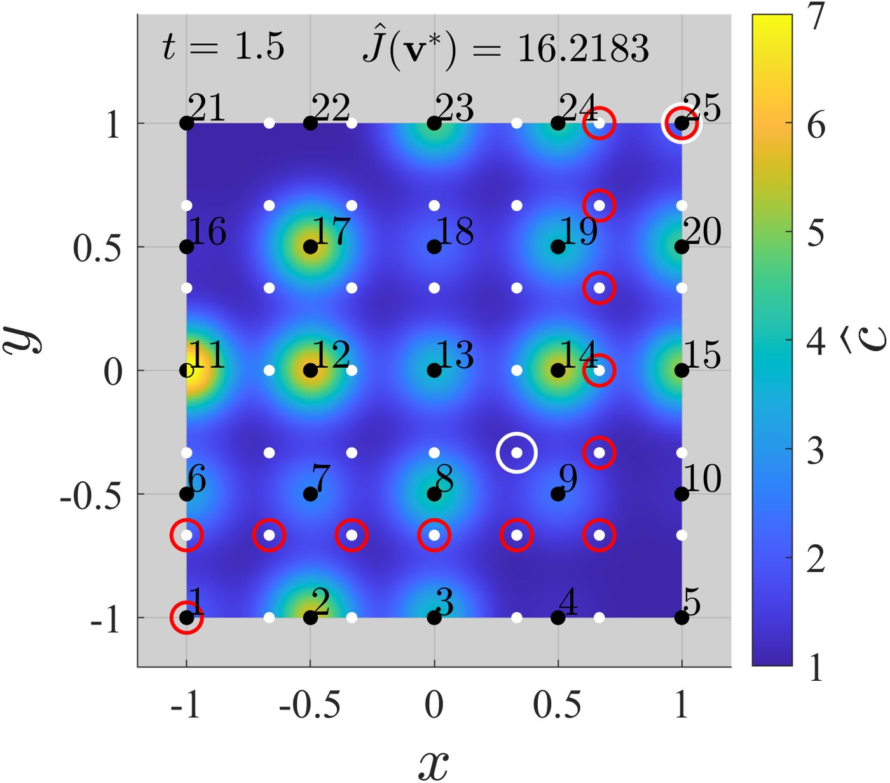
不是降低整张场的方差，而是降低路径代价的方差；这正是 WindESI 最接近的决策导向工作。差别在于 WindESI 还要处理空速 / 推力硬约束和“选择不飞”。
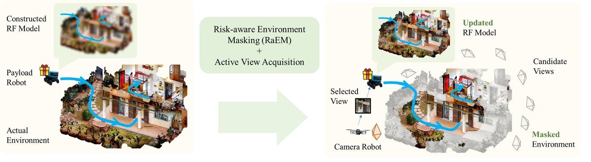
与 WindESI 的“不要只测最大误差，而要测会改变决策的位置”一致。WindESI 的风场版本需要把风险换成空速超限和候选路线差异。
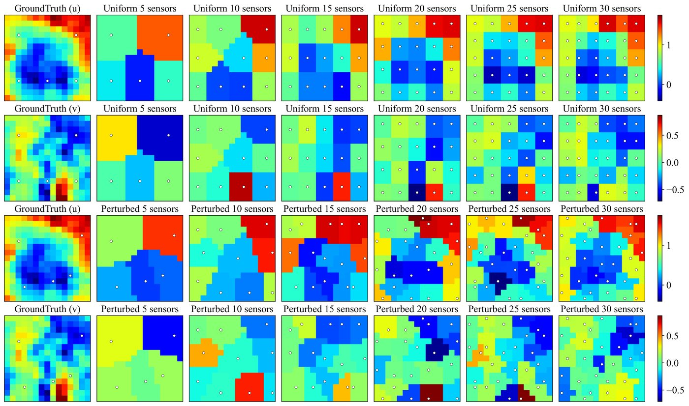
提醒 WindESI：建筑尺度的传感器分布、测量高度和城市几何是独立问题，不能只把任意点读数塞进一个重建网络。
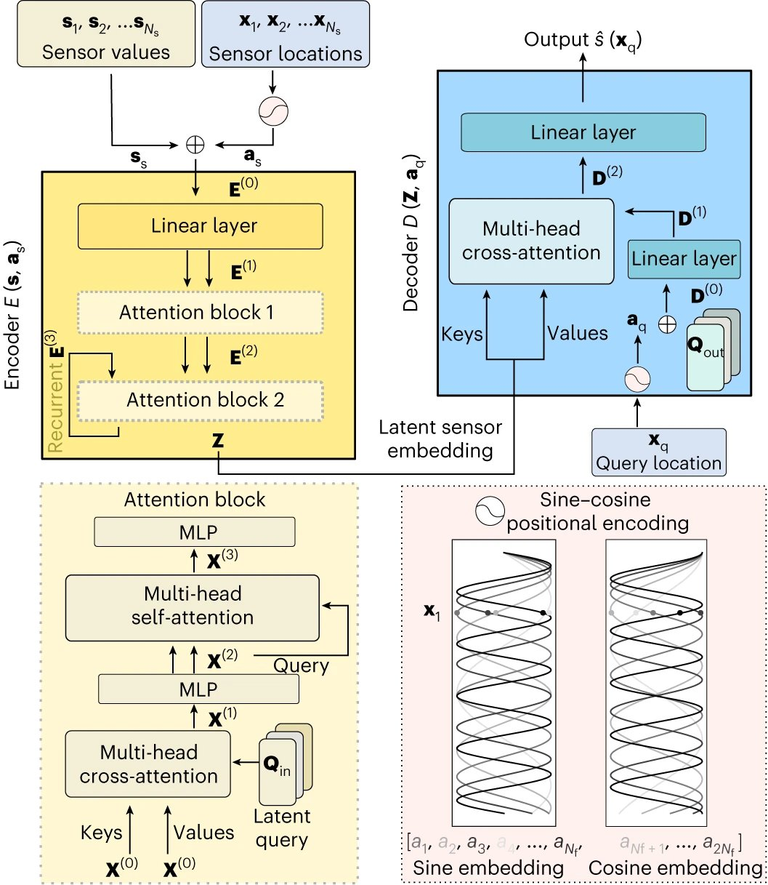
接口很适合“沿候选路线查询风”；可以作为低参数的重建 / belief update baseline。
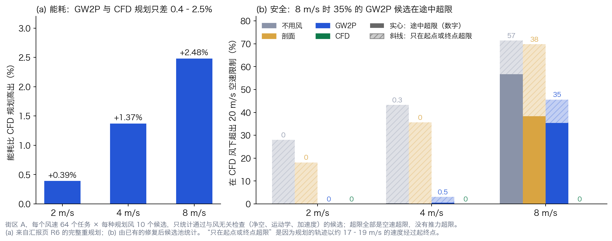
这张图是 WindESI 任务定义的依据：测量价值应该由“是否改变可飞性 / 路线排序”决定，而不是只看场 RMSE。
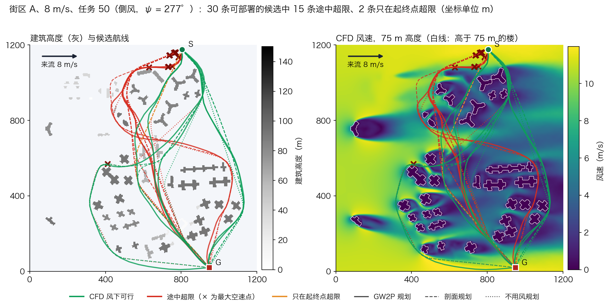
这说明主动测风不一定要全场覆盖，应该优先测候选之间分开的航段和接近限制的位置。
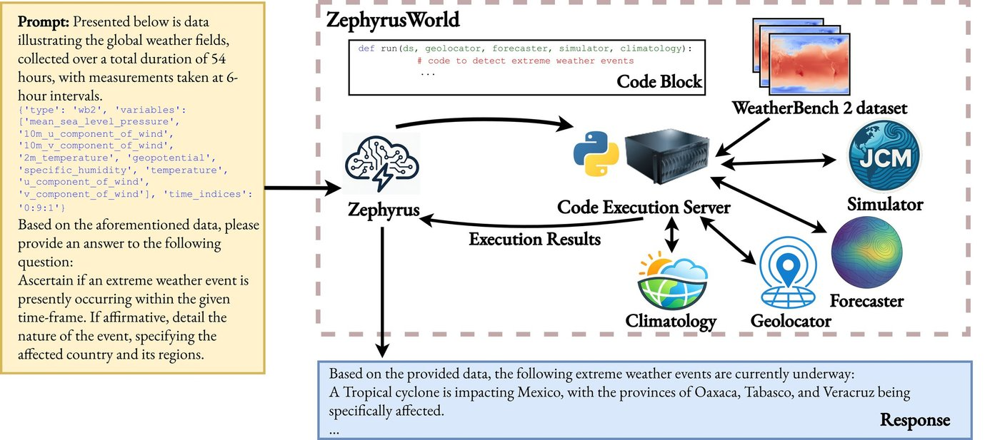
给 WindESI 的启发是工具调用闭环，而不是让 LLM 直接生成轨迹。Qwen 可以选择 `predict_wind`、`measure_probe`、`plan_route`、`check_safety`。
| 参考 | 可借鉴接口 |
|---|---|
| wind_aware_ros | 机载测风 → 局部风场 → MPPI 实时规划 |
| VoxPoser | 自然语言约束 → 价值 / 代价场 → 运动规划器 |
| jaxipm | 批量小 NLP，支撑测量后快速重规划 |
这些不是 WindESI 的直接 baseline，而是“工具如何接到规划器”的工程参照。
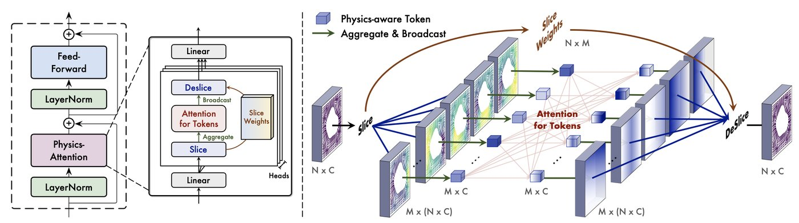
如果 WindESI 的先验工具需要更强的几何泛化，可以把 FNO 替换为 Transolver / GINO / WindINR，但它们仍然只是先验组件，不等于完整的端侧 agent。
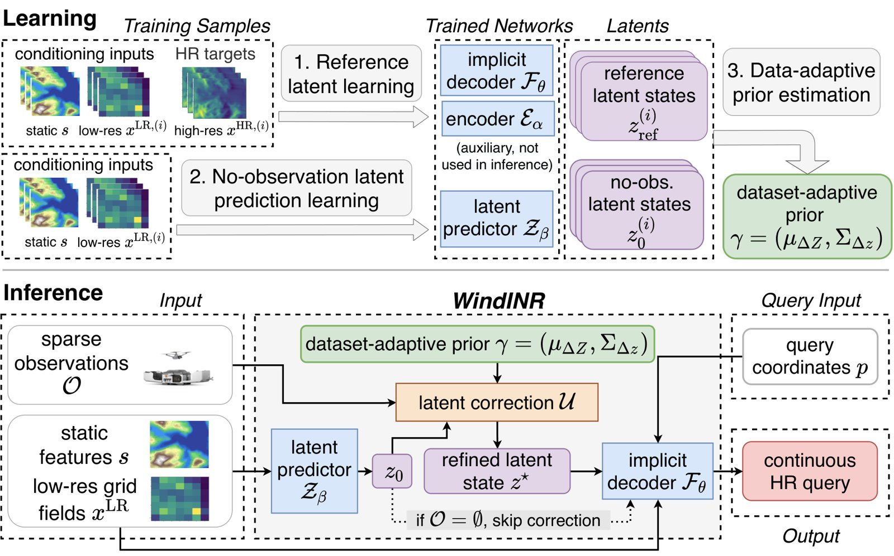
可作为 belief update 的另一条路线：测量之后不必重训整张场，只更新任务局部的低维状态。
图像来源说明：论文与官方仓库图片均保留原图，仅按页面宽度缩放；具体 origin / license 见 assets/data/assets_manifest.json。本页不把相关方法的论文结果当成 WindESI 的实验结果。
| 方法 / 系统 | 输入 | 优化目标 | 输出 | 和 WindESI 的关系 |
|---|---|---|---|---|
| GeoWind2Plan | 建筑几何 + 背景风 + 起终点 | 预测风下的节能路线 | 风场先验 + 路线 | WindESI 的城市风先验和规划基座 |
| WindSeer | 地形 + 稀疏机载测风 | 体积风场重建误差 | 3D 风 / TKE | 端侧稀疏测风重建参考，域从山地转到城市 |
| PhySense | 稀疏场观测 + 传感器位置 | 场重建误差 | 重建场 + 选点 | 选点 baseline；WindESI 把目标换成路线决策和安全 |
| CRMI | 路径、威胁场估计、传感器读数 | 路径代价方差 | 传感器配置 + 路径 | 最接近的决策导向主动测量对照 |
| U3DWind | 城市几何 + 多方向 / 多风速数据 | 预测、重建、暴露和风险任务 | 数据集 + benchmark | 补齐 WindESI 的新城市、新风向和风险评测 |
| Zephyrus / VoxPoser | 自然语言、环境状态、工具 | 任务完成 / 反馈改进 | 程序、代价场或工具调用 | 端侧决策层的 agent 结构参考 |
| WindESI | 地图 / 相机 + 风场先验 + 主动测量 | 失败率、不飞率、regret、测量成本 | 离散决策 + 工具调用 | 目标：在真实风场回放下少出错 |
| # | 行动 | 完成标准 |
|---|---|---|
| 1 | 扩展模型筛选：通用小模型、具身模型，各跑坐标 / 看图 / 主动 | 准确率 + Wilson 置信区间 |
| 2 | L0 / L1 / L2 分层诊断 | 区分读图、物理推理、选测点错误 |
| 3 | 工具化小模型，不训练 | T2 主动 ≥ 0.755 |
| 4 | 加入混合目标、自然语言约束、多步决策 | 固定 CPU 规则无法覆盖 |
| 5 | 2B / 4B SFT + GRPO | 留出街区超过工具化未训练版本 |